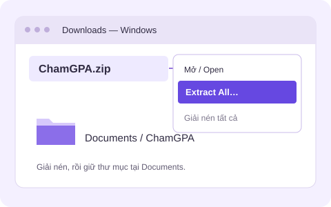
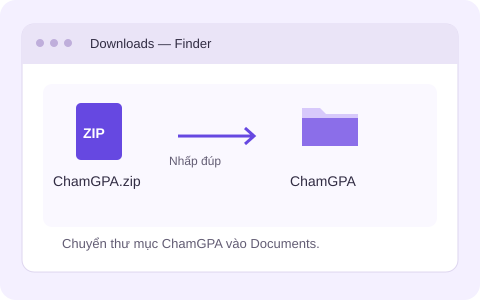
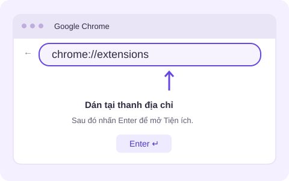
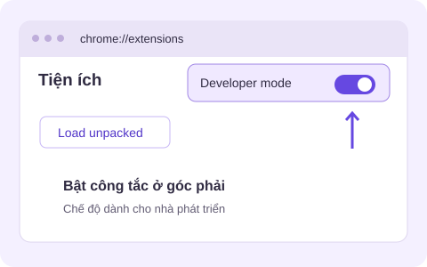
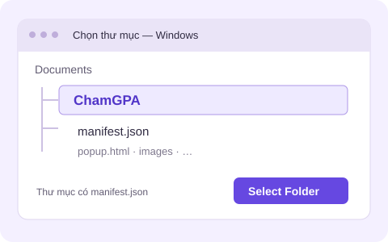
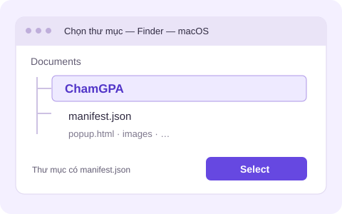

CÀI MỘT LẦN · DÙNG CHO NHỮNG KẾ HOẠCH TIẾP THEO
Cài Chạm GPA
trong 5 bước.
Thêm tiện ích vào Chrome để kết nối bảng điểm ULSA với kế hoạch của bạn. Bạn chỉ đăng nhập ở cổng trường, không nhập mật khẩu vào Chạm GPA.
Hình trong hướng dẫn là minh họa.
Giao diện Chrome của bạn có thể khác đôi chút.
Bạn đang dùng điện thoại hoặc máy tính bảng. Hãy mở hướng dẫn này bằng Chrome trên máy tính Windows/Mac để cài. Bạn vẫn có thể import Excel trên website.
Tải tiện ích Chạm GPA
Bấm nút bên dưới để tải ChamGPA.zip. Đây là bộ cài gọn, không cần tải toàn bộ mã nguồn.
↓ Tải tiện ích Không tải được? Mở trang phát hành ↗Ở trang phát hành, chọn ChamGPA.zip, không chọn “Source code”.
Giải nén và giữ lại thư mục
Trong mục Downloads, nhấp chuột phải vào ChamGPA.zip → Giải nén tất cả / Extract All…. Giải nén rồi chuyển thư mục ChamGPA vào Documents.
Trong Finder → Downloads, nhấp đúp ChamGPA.zip để giải nén. Chuyển thư mục ChamGPA vừa tạo vào Documents.
Giữ thư mục này tại chỗ. Chrome cần các file bên trong để tiện ích hoạt động; đừng xóa hoặc di chuyển sau khi cài.


Mở trang Tiện ích Chrome
Sao chép địa chỉ này. Mở tab Chrome mới, dán vào thanh địa chỉ phía trên rồi nhấn Enter.
Chrome không cho website mở địa chỉ này trực tiếp.
Mẹo: Ctrl + L để chọn thanh địa chỉ, rồi Ctrl + V.
Mẹo: ⌘ + L để chọn thanh địa chỉ, rồi ⌘ + V.

Bật chế độ nhà phát triển
Tìm công tắc Chế độ dành cho nhà phát triển / Developer mode ở góc trên bên phải và bật lên.
Đây là cách Chrome cho phép cài tiện ích từ một thư mục trên máy. Bạn không cần viết code.

Chọn thư mục Chạm GPA
Bấm Tải tiện ích đã giải nén / Load unpacked. Tìm trong Documents và chọn thư mục ChamGPA.
Chọn đúng thư mục có file manifest.json bên trong. Không chọn file ZIP; nếu còn một thư mục ChamGPA lồng bên trong, hãy mở tiếp vào đó.
Thấy thẻ “Chạm GPA” trong danh sách tiện ích là đã thêm thành công. Sau đó quay lại trang này để kiểm tra kết nối.


Cài xong? Kết nối thôi.
Nếu trang này đã mở trước khi cài tiện ích, hãy tải lại trang để Chrome kết nối với Chạm GPA.
KHI BẠN CẦN MỘT CHÚT TRỢ GIÚP
Gặp khó khăn?
Chrome báo thiếu manifest hoặc không tải được tiện ích
Hãy giải nén trước. Mở thư mục ChamGPA và kiểm tra bên trong có manifest.json, popup.html cùng các file khác. Ở bước 5, chọn chính thư mục này — không chọn ZIP hoặc thư mục cha. Nếu file bị thiếu, tải lại bộ cài từ trang phát hành chính thức.
Đã cài nhưng website chưa nhận ra
Tải lại cả tiện ích trong chrome://extensions và trang Chạm GPA. Kiểm tra tiện ích đang bật, được phép hoạt động trên website Chạm GPA, và cả hai đang ở cùng hồ sơ Chrome. Bản cũ có thể chưa hỗ trợ nhận diện; bạn vẫn dùng nút Phân tích GPA trong popup hoặc cập nhật bản mới. Không dùng chế độ ẩn danh.
Không có công tắc nhà phát triển hoặc không được phép cài
Máy do trường/công ty quản lý có thể bị giới hạn cài tiện ích. Hãy dùng Chrome trên máy cá nhân được phép cài. Không tắt bảo vệ của trình duyệt hoặc tìm cách vượt chính sách máy. Nếu đã có file Excel, bạn vẫn có thể import trên Chạm GPA.
Kết nối yêu cầu đăng nhập hoặc cổng trường đang lỗi
Đăng nhập trực tiếp tại sinhvien.ulsa.edu.vn trong cùng hồ sơ Chrome, quay lại website và bấm Kết nối lại. Chạm GPA không nhận mật khẩu của bạn. Nếu cổng trường đang chậm hoặc bảo trì, thử lại sau; bạn có thể dùng Excel đã tải trước đó.
Cập nhật Chạm GPA lên phiên bản mới
Bản cài từ ZIP không tự cập nhật. Tải ChamGPA.zip mới ở bước 1 và giải nén riêng. Mở thư mục ChamGPA mới, sao chép toàn bộ file và thư mục con vào đúng thư mục ChamGPA đã cài trước đó, đồng ý thay thế file cũ. Không tạo thêm thư mục ChamGPA lồng bên trong.
Vào chrome://extensions, bấm biểu tượng tải lại trên thẻ Chạm GPA; sau đó tải lại website Chạm GPA và cổng sinh viên. Kiểm tra số phiên bản trên thẻ tiện ích. Nếu không nhớ thư mục cũ, bạn có thể gỡ Chạm GPA rồi cài lại theo 5 bước trên.